LEV (Laboratorio de Electrónica Visual) is a platform of production, promotion and experimentation related to electronic
sound creations, audiovisual creations and digital art.
An open area of research which uses the latest technological tools to explore contemporary creation with national and international avant-garde artists and new and trailblazing creators, performing several activities and shows in public spaces.
The platform’s two big annual events are LEV Festival, in Gijón, and LEV Matadero, in Madrid.
Two largely attended festivals which serve as a meeting point to provide an all-round, eclectic view of the current state of sound, audiovisual and digital creations, and its constant evolution and connections with different disciplines, through live shows and audiovisual performances, concerts, immersive events of virtual and augmented reality, digital explorations, installations and exhibitions, among other activities. A schedule formed by works promoted and developed by the platform itself, plus co-productions and samples of independent works by several creators.
Beyond these two milestones, LEV keeps working throughout the whole year with offshore events called LEVents, artistic residencies to promote experimentation, research and project development, presentations, workshops about creative digital tools, plus the platform’s involvement and collaboration with institutions, national and international networks, and specific projects in the same scope.
Innovation has been LEV’s prime mover during its 18 years of activity, with each action aiming to break the mould and go beyond the limits of creativity, trying to avoid trite and established approaches and procedures. Like creative trends, LEV mutates and evolves, following the pulse of today’s new narratives and possibilities in this constantly changing artistic field, to make them available to anyone interested in immersing themselves in the most surprising, avant-garde side of contemporary digital creation.
LINK TO LEV FESTIVAL
An open area of research which uses the latest technological tools to explore contemporary creation with national and international avant-garde artists and new and trailblazing creators, performing several activities and shows in public spaces.
The platform’s two big annual events are LEV Festival, in Gijón, and LEV Matadero, in Madrid.
Two largely attended festivals which serve as a meeting point to provide an all-round, eclectic view of the current state of sound, audiovisual and digital creations, and its constant evolution and connections with different disciplines, through live shows and audiovisual performances, concerts, immersive events of virtual and augmented reality, digital explorations, installations and exhibitions, among other activities. A schedule formed by works promoted and developed by the platform itself, plus co-productions and samples of independent works by several creators.
Beyond these two milestones, LEV keeps working throughout the whole year with offshore events called LEVents, artistic residencies to promote experimentation, research and project development, presentations, workshops about creative digital tools, plus the platform’s involvement and collaboration with institutions, national and international networks, and specific projects in the same scope.
Innovation has been LEV’s prime mover during its 18 years of activity, with each action aiming to break the mould and go beyond the limits of creativity, trying to avoid trite and established approaches and procedures. Like creative trends, LEV mutates and evolves, following the pulse of today’s new narratives and possibilities in this constantly changing artistic field, to make them available to anyone interested in immersing themselves in the most surprising, avant-garde side of contemporary digital creation.
LINK TO LEV FESTIVAL
______ ______ __ ______ ______
/\ ___\ /\ __ \ /\ \ /\ __ \ /\ == \
\ \___ \ \ \ \/\ \ \ \ \____ \ \ __ \ \ \ __<
\/\_____\ \ \_____\ \ \_____\ \ \_\ \_\ \ \_\ \_\
\/_____/ \/_____/ \/_____/ \/_/\/_/ \/_/ /_/
______ __ __ ______ __ __ ______ ______ ______
/\ ___\ /\ \/\ \ /\__ _\ /\ \/\ \ /\ == \ /\ ___\ /\ ___\
\ \ __\ \ \ \_\ \ \/_/\ \/ \ \ \_\ \ \ \ __< \ \ __\ \ \___ \
\ \_\ \ \_____\ \ \_\ \ \_____\ \ \_\ \_\ \ \_____\ \/\_____\
\/_/ \/_____/ \/_/ \/_____/ \/_/ /_/ \/_____/ \/_____/